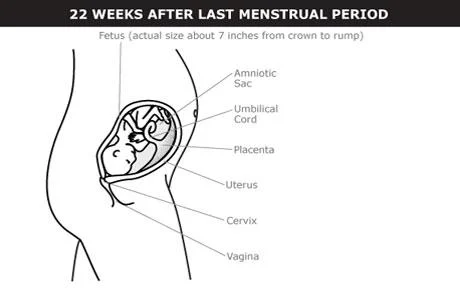

©copy writed by Group II
During the 6th month, your fetus starts to develop blood cells, taste buds, eyebrows and eyelashes.
The fetus has a CRL of about 7 inches (18–19 cm).
Bone marrow starts making blood cells.
Taste buds begin to form.

The fetus has a CRL of about 8 inches (20 cm).
Eyebrows and eyelashes usually develop between weeks 23 and 26.
Pregnancy symptoms from the fourth and fifth month usually continue. Shortness of breath may improve. Your breasts may start producing colostrum — tiny drops of early milk. This may continue throughout the rest of your pregnancy.
Some people have Braxton-Hicks contractions when they’re 6 months pregnant. They feel like a painless squeezing of the uterus or abdomen. This is the uterus’s way of practicing for labor and delivery. Braxton-Hicks contractions are normal and not a sign of early labor. But check with your doctor if you have painful or frequent contractions or if you have any concerns.
©copy writed by Group II